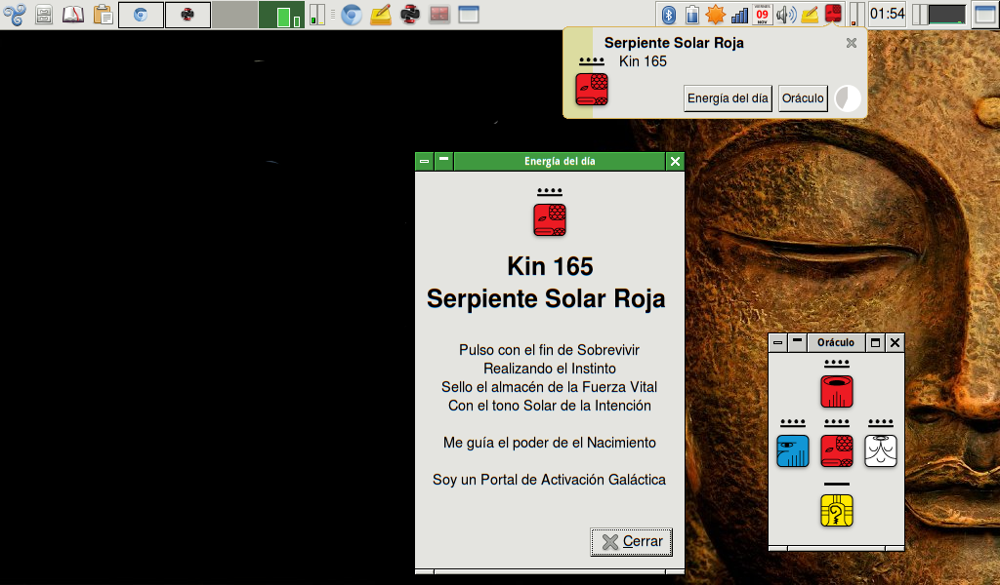

Calendario de las 13 Lunas

El sincronario galáctico de las 13 lunas es una ventana a la realidad cuatridimensional y una oportunidad de sincronizar con los ritmos de la naturaleza. Mediante la práctica diaria de seguir este calendario sagrado se busca la comprensión profunda de que el tiempo es arte.